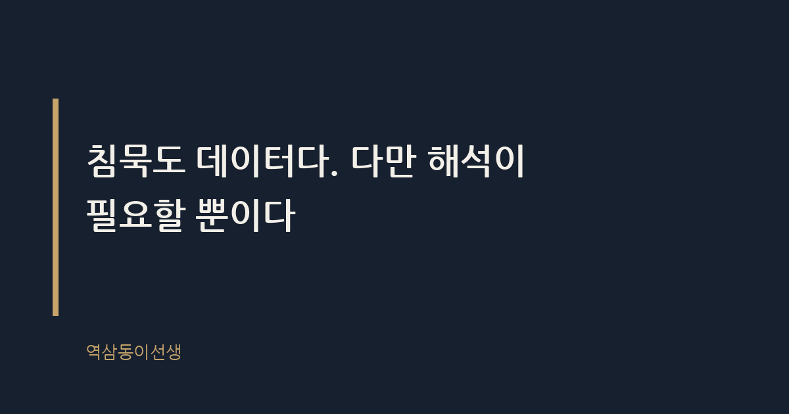

주제 회사가 조직개편을 예고할 때 읽어야 할 신호 (evergreen / career)
제목 후보
메타 설명 조직개편 공식 발표 전에 나타나는 7가지 신호와 그 구조적 원인을 25년 차 마케터의 관찰로 정리했다.
라벨 조직개편, 직장생활, 커리어관리, 구조조정신호, 사내정치, 퇴사타이밍, 조직개편징후, 인사팀1on1, 임원회의변화, 조직개편대비법, 회사조직개편신호
실용 자산 체크리스트 — 검색 의도가 '무엇을 확인해야 하는가'에 가까운 도구형 주제라 순서대로 점검할 수 있는 체크리스트를 본문에 직접 넣었다
발행 전 팩트체크
이미지 (Blogger 편집기에 드래그해 넣으세요)

2주 전 월요일 아침, 인사팀 캘린더에 낯선 패턴이 보였다. '1:1 면담'이라는 제목의 30분짜리 미팅이 팀장급 전원에게 걸려 있었다. 안건도, 참석자 명단도 없었다. 그날 오후, 평소라면 누구나 드나들던 임원 회의실 문이 종일 닫혀 있었다. 복도에서 마주친 인사팀장은 평소보다 한 톤 빠르게 인사하고 지나갔다.
그로부터 3주 뒤, 전체 조직개편 공지가 떴다. 돌이켜보니 신호는 이미 다 와 있었다. 조직개편은 공식 발표 전에 이미 시작돼 있다.
조직개편 신호를 읽는 사람과 못 읽는 사람의 차이는 정보력이 아니라 관찰력이다. 누군가는 뉴스로 알게 되고, 누군가는 캘린더 하나로 눈치챈다. 25년 동안 이 업계에서 몇 번의 개편을 겪으며 배운 게 하나 있다면, 조직은 발표 전에 반드시 몸짓으로 먼저 말한다는 사실이다.
조직개편 신호란 공식 발표 전 조직 안에서 감지되는 행동 패턴의 변화를 말한다. 숫자나 문서가 아니라 사람의 동선, 일정, 침묵의 방식으로 먼저 드러난다. 채용 공고 하나, 회의실 문 하나, 평소보다 짧아진 메신저 답장 하나가 모두 신호가 될 수 있다.
이 신호가 공식 발표보다 먼저 나타나는 이유는 의사결정 자체가 숫자로 확정되기 전에 사람과 일정부터 먼저 움직이기 때문이다. 인사팀은 조직도를 확정하기 전부터 면담 일정을 잡아야 하고, 경영진은 예산안이 승인되기 전부터 회의 빈도를 늘려야 한다. 결정은 늦게 나와도, 준비는 항상 먼저 시작된다.
신호의 종류도 생각보다 다양하다. 어떤 건 '증가'로 나타난다. 임원 회의, 외부 자문, 법무팀 검토 횟수가 눈에 띄게 늘어난다. 어떤 건 반대로 '감소'로 나타난다. 특정 부서의 신규 채용, 예산 집행, 메일 참조 범위가 조용히 줄어든다. 재미있는 건 늘어나는 신호보다 줄어드는 신호가 훨씬 알아채기 어렵다는 점이다. 사람은 뭔가 늘어나는 건 민감하게 느끼지만, 조용히 빠지는 건 한참 뒤에야 깨닫는다.
회사가 조직개편을 미리 공지하지 않는 이유는 동요를 최소화하기 위해서다. 확정되지 않은 안을 흘리면 이탈이 늘고, 루머가 사실보다 빨리 퍼진다. 그래서 공식 커뮤니케이션은 최대한 늦게, 한 번에 나간다. 문제는 조직이 말로 숨겨도 행동으로는 숨기지 못한다는 데 있다.
베르사유 궁정의 신하들은 루이 14세의 아침 기상 의식, 이른바 '르베'에서 누가 가까이 서고 누가 뒤로 밀렸는지만 보고도 다음 숙청 대상을 짐작했다. 왕은 아무 말도 하지 않았지만 자리 배치가 모든 걸 말했다. 조직도 다르지 않다. 누가 어느 회의에 불려가고, 누가 갑자기 참조에서 빠지는지가 발표문보다 정직하다.
마케터로서 이 구조를 다시 보면 결국 커뮤니케이션의 타이밍 문제다. 회사는 '메시지'를 통제하려 하지만, 조직 내부의 '신호'까지는 통제하지 못한다. 메시지는 설계할 수 있어도 사람의 동선까지 각본을 짤 수는 없기 때문이다.
같은 개편이라도 어디에 앉아 있느냐에 따라 보이는 신호가 다르다. 팀장급에게는 '면담'의 형태로 먼저 온다. 안건 없는 1:1, 이례적으로 긴 피드백 시간, 평소 묻지 않던 '요즘 어떠냐'는 질문이 반복된다. 실무자급에게는 '업무량'의 형태로 온다. 갑자기 맡던 프로젝트가 보류되거나, 반대로 평소 하지 않던 영역의 일이 슬쩍 얹어진다.
임원급에게는 '회의 참석자 명단'의 형태로 온다. 늘 함께 들어가던 회의에 어느 날부터 본인만 빠지거나, 반대로 평소 부르지 않던 자리에 호출된다. 흥미로운 건 이 신호들이 서로 연결돼 있다는 점이다. 임원의 회의 명단이 바뀌면 며칠 뒤 팀장의 면담 일정이 잡히고, 그 뒤 실무자의 업무 배분이 흔들린다. 조직개편은 위에서 아래로 떨어지는 폭탄이 아니라, 위에서 아래로 번지는 잔물결에 가깝다.
그래서 신호를 읽을 때는 자기 직급 하나만 보면 안 된다. 바로 위 직급에서 무슨 일이 일어나고 있는지를 함께 봐야 한다. 내 자리에서는 아무 변화가 없어도, 팀장이 요즘 유독 말을 아낀다면 이미 신호는 와 있는 것이다.
스타트업과 대기업은 같은 신호라도 번지는 속도가 다르다. 구성원이 수십 명 수준인 조직에서는 신호가 거의 실시간으로 퍼진다. 대표가 평소와 다른 사람과 점심을 먹으러 나가는 것만으로도 오후에 소문이 한 바퀴 돈다. 반면 수천 명 규모의 조직에서는 신호가 부서 단위로 분절돼 퍼진다. 한 본부에서는 이미 면담이 끝났는데, 옆 본부는 아무 낌새도 못 챈 채 일주일을 더 보내는 식이다.
이유는 단순하다. 조직이 클수록 결재 라인이 길고, 라인이 길수록 신호가 통과하는 데 시간이 걸린다. 대기업에서 조직개편 신호를 가장 먼저 읽는 사람은 대개 임원의 일정을 관리하는 비서실이나 인사기획팀이다. 이들의 업무 강도가 눈에 띄게 올라가는 시점이, 실무자 체감보다 보통 2~3주쯤 앞선다. 그래서 같은 회사 안에서도 "난 전혀 몰랐다"는 사람과 "이미 다 알고 있었다"는 사람이 동시에 존재한다.
아래는 개편 발표 전 실제로 반복해서 관찰되는 패턴이다. 한두 개가 겹친다고 바로 개편이 있는 건 아니다. 다만 서너 개가 동시에 보이면, 눈여겨볼 시점이다.
모든 변화가 조직개편의 전조는 아니다. 임원 회의가 늘었다고 해서 항상 구조조정을 준비하는 건 아니다. 분기 말 실적 점검, 신규 사업 검토, 외부 투자 유치 과정에서도 비슷한 패턴이 생긴다. 그래서 신호 하나만 보고 섣불리 결론을 내리면 오히려 불안만 키운다.
진짜 신호와 가짜 신호를 가르는 기준은 '중첩성'이다. 체크리스트의 항목 하나가 단독으로 나타나면 대개 일상적인 업무 변화다. 하지만 서너 개가 같은 2~3주 안에 겹쳐서 나타나면 얘기가 달라진다. 면담과 채용 중단과 보고라인 혼선이 동시에 보인다면, 그건 우연이 아니라 패턴이다. 신호를 읽는다는 건 점 하나를 보는 게 아니라 점들이 그리는 선을 보는 일이다.
신호를 먼저 읽은 사람들에게는 공통점이 있었다. 동요하지 않았다는 것이다. 그들은 소문을 좇는 대신 자기 업무의 성과를 문서로 정리해두는 쪽을 택했다. 조직개편의 칼끝은 대체로 '증명되지 않은 역할'을 향하기 때문이다.
반대로 신호를 끝까지 못 읽은 사람들은 발표 당일 가장 크게 흔들렸다. 준비가 없었으니 선택지도 없었다. 신호를 읽는다는 건 미래를 예측하는 능력이 아니라, 변화가 오고 있다는 사실 자체를 받아들이는 태도에 가깝다.
이 지점에서 재미있는 반전이 하나 있다. 신호를 가장 빨리 읽는 사람은 야심 찬 사람이 아니라 평소 조직도를 가장 꼼꼼히 들여다보는, 다소 소심한 사람일 때가 많았다. 불안이 관찰력을 키운 셈이다.
몇 해 전 함께 일했던 마케팅 팀장은 임원 회의 명단에서 조용히 빠진 지 열흘 만에 본인 조직이 통폐합된다는 걸 알았다. 그 열흘 동안 그는 소문을 캐묻는 대신 지난 2년간의 캠페인 성과 자료를 정리했다. 개편 발표 당일, 그는 유일하게 '남을 이유'를 숫자로 들고 있는 사람이었다. 결과적으로 그 팀은 축소됐지만 그는 남았다.
반대 사례도 있다. 같은 회사의 다른 팀장은 면담 일정이 잡혔을 때도 "그냥 정기 면담이겠지"라며 대수롭지 않게 넘겼다. 발표 당일, 그는 가장 먼저 소집 대상이 됐고 가장 늦게 상황을 파악했다. 두 사람의 차이는 능력이 아니라 신호 앞에서의 태도였다. 하나는 불안을 관찰로 바꿨고, 하나는 불안을 회피로 바꿨다.
또 다른 동료는 조금 다른 길을 택했다. 그는 체크리스트 항목이 서너 개 겹치는 걸 확인한 뒤, 굳이 숨기지 않고 상사에게 직접 물었다. "혹시 저희 쪽 조직에 변화가 있나요." 돌아온 답은 모호했지만, 그 질문을 던진 순간부터 그는 적어도 불확실성 속에서 수동적인 입장은 벗어났다. 신호 앞에서 할 수 있는 선택지는 침묵만이 아니다.
브랜드 론칭 전에도 비슷한 패턴이 있다. 공식 발표 전 시장에는 티저, 루머, 유출 이미지가 먼저 돈다. 기업은 이걸 통제하려 애쓰지만 완전히 막은 사례를 거의 본 적이 없다. 조직개편도 결국 내부를 향한 하나의 '론칭'이다. 발표일은 정해져 있어도, 그 전까지의 신호는 설계된 각본 바깥에서 새어 나온다.
침묵도 데이터다. 다만 해석이 필요할 뿐이다. 평소보다 조용한 경영진, 유독 느려진 결재, 갑자기 바빠진 인사팀. 이 모든 침묵이 사실은 가장 많은 말을 하고 있는 순간이다.
브랜드가 티저 영상 한 컷으로 소비자의 기대를 설계하듯, 조직도 작은 균열 하나로 구성원의 태도를 미리 시험한다. 다른 점이 있다면 브랜드의 티저는 의도된 것이고, 조직의 균열은 의도치 않게 새어 나온다는 것이다. 의도하지 않았기 때문에 오히려 더 정직하다.
씁쓸하면서도 꽤 인상적이다. 회사는 조직개편을 비밀로 지키려 하지만, 사람이 움직이는 한 완전한 비밀은 없다. 캘린더 한 줄, 닫힌 문 하나가 어떤 보도자료보다 먼저 진실을 말한다. 조직개편 신호는 결국 회사가 숨기지 못하는 가장 정직한 언어다.
Q. 조직개편 발표 전, 이상하게 조용하거나 캘린더가 낯설게 바뀌는 걸 먼저 눈치챈 적 있으신가요?